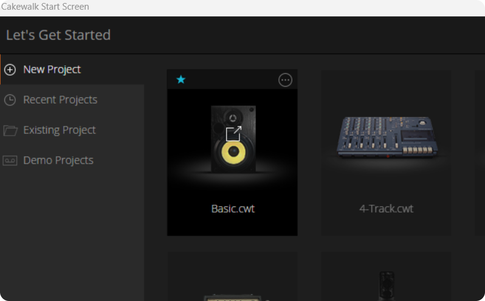

First we’ll learn some basic things about how to use Cakewalk. Nothing too complicated: just what you need for now. Advanced stuff is easier to learn later once you've made a few tracks.

Fast actions
- Create a new project and save it early.
- Right click tracks to add instruments or delete tracks.
- Use the piano roll to draw notes.
Mini music theory (very small)
The distance in pitch between two notes is called an interval. Two or more notes at the same time is a chord. Tempo is how fast each beat is.
Common chords (examples)
| Chord | Notes | Mood |
|---|---|---|
| C major | C - E - G | Bright |
| A minor | A - C - E | Sad |
| G major | G - B - D | Open |
| F major | F - A - C | Warm |
What collections of notes (and in turn intervals) you use in a particular song is called the key (the specific notes) and the scale (the specific intervals) of that song. There’s many scales, but the most common ones you might have heard about before are the major and minor scales. You likely won't use these terms consciously at first, but they'll help you over time.
You're all set up and ready!
Well, now it’s time for the most exciting part, actually making a song! On the next page I’ll guide you through a demo of how to make a song